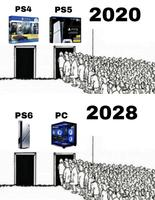

0


Microsoft plans to disable and remove OWA Light, the lightweight Outlook Web Access client for Exchange Server, in an upcoming update expected in August 2026. The company says retiring the two-decade-old legacy interface will reduce attack surface and engineering complexity, pushing users to the modern Outlook on the web experience instead. BleepingComputer reports: "OWA Light was an important compatibility experience when the web needed it. Today, the full Outlook on the web experience is the right place for us to focus," the Exchange Team said on Wednesday. "Retiring OWA Light will help reduce legacy surface area, simplify ongoing engineering work, and allow us to continue improving the experience customers use every day."
Microsoft introduced OWA Light roughly two decades ago as an alternative to OWA Premium, offering a simplified web interface for systems that didn't have Internet Explorer 6 or later installed or ran older web browsers. At the time, the company said that OWA Light offered a cleaner look, faster logon times on low-bandwidth Internet connections, and worked in locked-down browser modes (such as kiosks).
Microsoft deprecated OWA Light as of August 19, 2024, and announced this week that the OWA Light experience will likely be removed from Exchange Server (on-premises) next month. "In an upcoming Exchange Server update (estimated in August 2026), we plan to disable and remove the OWA Light experience. After that change is introduced, users will no longer be able to choose or be redirected to OWA Light and should use the modern Outlook on the web experience instead."
Read more of this story at Slashdot.
Nobel-winning chemist Omar Yaghi is leaving UC Berkeley for China's Tsinghua University, where he will lead a new AI institute focused on accelerating the discovery of advanced materials. "Last week, Tsinghua University in Beijing welcomed Dr. Yaghi in an appointment ceremony, calling him one of the world's foremost chemists," reports The New York Times. "The university said he saw his new post as an opportunity 'not to slow down, not to repeat what has already been done, but to do science with more energy, more intensity, and more ambition than ever before.'" From the report: Dr. Yaghi was born in Amman, Jordan, to Palestinian refugees whose one-room home lacked electricity and running water. Early on, he became fascinated with a schoolbook's depiction of atomic building blocks. When he was 15, his father, a butcher, sent him to the United States. Last year, before flying to Stockholm to receive his Nobel Prize, Dr. Yaghi in an interview with The New York Times voiced concern about Mr. Trump's immigration policies, saying that they endanger the nation's system of universities, companies and governments that promote scientific excellence. "I think it's regrettable," he said of Mr. Trump's nationalism. "We have to know that people coming from different backgrounds improve the level for everybody involved," he added. "That's an amazing story. Great thinkers can improve not only the U.S. but the world."
Dr. Yaghi joined the University of California, Berkeley, in 2012, and while there earned many awards for his scientific advances. He received his Nobel Prize for helping discover a world of chemistry in which molecular building blocks are assembled into structures that possess vast internal surface areas -- the largest of any known substance. His porous structures can act like sponges that readily absorb, store and release gases and vapors. He named them metal-organic frameworks. The metal atoms form an adjustable framework that can hold chemicals associated with life -- carbon atoms in particular. While deeply theoretical, the frameworks are so radical, innovative and flexible in nature that materials experts and companies foresee many commercial uses for them. The frameworks can, for instance, harvest water from desert air. In 2018, Dr. Yaghi's students at Berkeley tested the idea in the Mojave Desert in California, finding that a small passive harvester could each day produce nearly three cups of pure, drinkable water. The device is now nearing commercialization.
In the interview with The Times, Dr. Yaghi credited the invention to his boyhood efforts to secure water for his family. The municipal pipes worked for only a few hours every week or two. That hardship, he added, shows how the diverse experiences of emigres can lead to unexpected breakthroughs. Dr. Yaghi has longstanding ties with Tsinghua University. In 2022, the Beijing school appointed him as an honorary professor and in that role he closely followed its work in chemistry, materials science and related disciplines. Now, on joining Tsinghua full time, Dr. Yaghi is being named as the head of a new A.I. institute for science research that will focus on the design and synthesis of new materials. Its underlying aim, the university said, is to "overcome the efficiency bottlenecks of traditional trial-and-error approaches" and shorten the usual cycles of discovery.
Read more of this story at Slashdot.
An anonymous reader quotes a report from Ars Technica: Humanoid robots have surgically removed the gallbladders from living animals in an unprecedented medical experiment -- but not as autonomous machines capable of replacing human doctors. Instead, skilled human surgeons remotely controlled the robots' movements in a new example of human-robot teamups. The teleoperated humanoid robots completed two minimally invasive surgeries by removing gallbladders from live pigs during a preclinical trial that was published in the journal Nature. If this approach eventually proves clinically ready for human patients, surgeons could use such humanoid robots to remotely perform robotic-assisted surgical care in smaller hospitals and clinics that lack the resources to install specialized but expensive surgical robots.
The experiment used a Unitree G1 humanoid robot made by leading Chinese robotics company Unitree. The cheapest baseline G1 model with effectively non-functional hands has a starting price of $13,500 and shipping costs ranging between $300 and $1,200, whereas adding crucial upgrades such as dexterous robotic hands can easily push the cost beyond $67,000. But such humanoid robots made in China are still significantly cheaper than specialized surgical robots like Intuitive Surgical's da Vinci Surgical System, which can cost anywhere between half a million dollars and several million dollars. The specialized surgical robots can also weigh about 1,800 pounds and take up considerably more space in operating rooms. By comparison, the Unitree humanoid robots, standing at 5 feet tall and weighing just 60 pounds, may be more suitable for smaller clinical settings in remote areas.
Read more of this story at Slashdot.
U.S. lawmakers are probing the growing use of Chinese AI models by American companies, citing concerns over censorship, security risks, and whether U.S. firms are turning to cheaper foreign models because domestic alternatives are too costly or restricted. The investigation is specifically looking at companies such as Cursor and Airbnb. "The growing use of Chinese AI models by U.S. companies raises serious concerns," a State Department spokesperson told CNBC. Those "AI models are designed to advance Beijing's narratives, censor dissent, and reflect CCP ideology and values." CNBC reports: The House Committee on Homeland Security and the House Select Committee on China said in April they will jointly investigate the growing adoption of Chinese-developed AI models. An initial step in the probe was for the chairmen of those committees to send letters to Cursor and Airbnb, over their "use of or exposure to these risks" through AI developed in China. "The Chinese Communist Party is no longer just nipping at our heels in artificial intelligence; it is racing to close the gap in some of the exact capabilities that will shape the future of cybersecurity," Andrew Garbarino, chairman of the U.S. House Committee on Homeland Security, told CNBC. "Recent reporting that a Chinese open-weight model can match leading U.S. models in certain vulnerability discovery and cybersecurity tasks is highly alarming," said Garbarino.
While some government departments have banned the usage of Chinese AI models including DeepSeek, adoption of them by U.S. companies is not prohibited. Tech chiefs, including crypto company Coinbase's Brian Armstrong and AI startup Lindy's Flo Crivello, have been publicly touting the use of models from China to reduce costs. Cursor, which will be acquired by Elon Musk's SpaceX for $60 billion, built its Composer 2 model using Chinese AI model Kimi, which was developed by Moonshot AI. Alongside focusing on the rise of Chinese AI models, the ongoing joint House Committees' investigation is also looking into whether the U.S. is doing enough to tackle their rise. "The Committees are also examining whether the United States has a sufficient open-weight AI strategy to ensure American companies and cyber defenders are not forced to choose between expensive or restricted U.S. models and cheap, capable PRC-developed alternatives," a Committee aide, who asked not to be named as they were not authorized to discuss the ongoing probe, told CNBC.
[...] The administration could consider the use of federal procurement bans, which would include restricting government agencies and private companies that serve the U.S. government from using Chinese AI models, Kyle Chan, fellow in the John L. Thornton China Center at think tank Brookings, told CNBC. "However, it's ultimately impossible to ban China's open-source AI models because their model weights are available freely on the internet," Chan added. "This could enter into first amendment speech issues." [...] Another [approach] could be disseminating findings about risks and vulnerabilities associated with Chinese AI models to U.S. companies. "Regardless, I do expect both the Executive Branch and Congress to communicate their interest not to see U.S. companies adopting these models," [said Daniel Remler, senior fellow, technology and national security program at think tank the Center for a New American Security (CNAS), told CNBC].
Read more of this story at Slashdot.
Google says the World Cup drove Search to its highest usage in history, with queries per second peaking right after Argentina's winning goal against Egypt. CNBC reports: The milestone comes as the company tries to prove its traditional search engine can keep its relevance in the age of AI, where chatbots have become more prevalent. Google still controls 90% of the search market, its stock price has more than doubled in the past year and revenue growth in the first quarter was the fastest for any period since 2022.
Google said its top searched query after the game was "argentina vs egypt." Globally, the company also saw people searching for things like "argentina x colombia" and "how many world cup goals does messi have." Additional queries included "what is it called when a player hits another player in game" and "is it messi's last world cup."
Read more of this story at Slashdot.
BrianFagioli writes: The Linux Foundation intends to launch the Open Health Stack Software Foundation, a new vendor-neutral home for the Google Open Health Stack project. Google is contributing the project code and assets while Google.org is providing a $3 million grant. The initiative is also backed by Microsoft, Anthropic, and the World Health Organization, with the goal of building open source, AI-ready digital health infrastructure. Will moving the project under Linux Foundation governance accelerate adoption, or is this simply another foundation that most developers will never interact with? The new project will focus on core HL7 FHIR technologies for healthcare interoperability, the Open Health Stack Player deployment toolkit, and AI Commons -- a model-agnostic healthcare AI initiative being co-developed with the World Health Organization.
A notable part of the announcement is its planned Implementer Program, which aims to give startups, small businesses, and local developers in low- and middle-income countries a formal role in governance. In other words, the effort is not just about building healthcare software standards, but about making sure the people implementing them in underserved markets help shape the project too.
Read more of this story at Slashdot.
Starting with macOS 28, Apple will no longer support encrypted Mac OS Extended, or HFS+, volumes. Users will need to decrypt them or reformat them as APFS to keep using them. 9to5Mac reports: In a new support document, Apple explains that starting with macOS 28, "the Mac OS Extended file system format will be supported only for volumes (disks and other storage devices) that aren't encrypted." In practice, this means users who currently rely on encrypted HFS+ external drives or other encrypted legacy Mac-formatted volumes will need to "either decrypt or reformat any encrypted Mac OS Extended volumes."
Apple doesn't explain the reason for the change. Still, the move appears to be another step in Apple's transition to APFS, its file system with built-in encryption support, which replaced Mac OS Extended as the default Mac file system in macOS High Sierra. As a result of this change, Apple says that starting with macOS 26, Macs might notify users when they're using an encrypted Mac OS Extended disk that won't be compatible with macOS 28 or later.
According to the support page, "the notification will identify the volume by name." However, Apple says users can manually confirm whether a volume is both using Mac OS Extended format and encrypted by following these steps [...]. Apple adds that "macOS 28 and later will continue to support unencrypted volumes that use Mac OS Extended format," and notes "Mac OS Extended is also known as HFS Plus (or HFS+)."
Read more of this story at Slashdot.
OpenAI has released GPT-Live-1 and GPT-Live-1 mini, "claiming that they sound more natural and can handle turn-taking better," reports TechCrunch. "These are full-duplex models, meaning they can speak and listen at the same time, allowing users to interrupt naturally and enabling features like live translation." TechCrunch reports: The company is also replacing its current Advanced Voice Mode in ChatGPT with GPT-Live-1 mini by default. Users of paid tiers will be able to access the larger GPT-Live-1 model. The previous model combined a speech-to-text model to transcribe speech, a large language model to generate responses, and a text-to-speech model to deliver the final answer.
The company said in a press briefing that the new models solve issues like interrupting users while they're talking and not having enough intelligence to answer questions. OpenAI's new models will send the query to its latest text models like GPT-5.5 for search, reasoning, or agentic capabilities while continuing the conversation.
OpenAI also showed that the model can stay silent for a long time and absorb the context of the conversation until it's called upon. Plus, as the new voice mode has access to newer GPT models, it can also present some information in a visual format. Other startups like Monogram, which raised $40 million in seed funding from DST and Lux Capital, are also leaning into visual responses to make assistants more interactive.
The company said the new voice mode in ChatGPT is designed to have longer conversations. During the briefing, ChatGPT Voice's product lead, Atty Eleti, said he has had 30- to 40-minute-long conversations with the voice feature during walks.
Read more of this story at Slashdot.
A new study proposes using shoebox-sized detector satellites to sniff out nuclear weapons launched by adversary nations. The idea is aimed at addressing fears that a space-based nuclear detonation could destroy satellites across low Earth orbit and make some orbits unusable for years. Space.com shares the findings from a new paper authored by Areg Danagoulian, an associate professor of nuclear science and engineering at the Massachusetts Institute of Technology: No reliable way currently exists to detect and defuse a nuclear bomb in space. Danagoulian proposes a constellation of small "9U" cubesats, each one about the size of a large shoebox and each carrying a special detector capable of sensing radiation emitted by unexploded nuclear bombs. He explores a scenario in which Russia launches a suspected space nuke into an orbit with an altitude of 1,200 miles (2,000 km). That number is not random. In 2022, Russia's Kosmos 2553 satellite, orbiting at that exact altitude, triggered suspicions it might be testing components for a future orbital nuclear weapon.
Russia claims the satellite just observes Earth. At that altitude, the satellite passes through the Van Allen belt, a region of intense cosmic radiation trapped by Earth's magnetic field. Most of the belt stretches between altitudes of around 600 miles (1,000 km) to tens of thousands of miles, but in some areas the radiation can reach much closer to Earth's surface. The interaction between the fissile material inside the nuke and the energetic particles from the radiation belt would create distinct signatures, Danagoulian said, which could help confirm whether a suspicious satellite carries a nuke or not.
"The thermonuclear weapon would contain a significant amount of uranium," Danagoulian said. "The high-energy protons [in the uranium] would break up when another proton is coming in and shred the nuclei. That would knock out a large number of neutrons. This interaction turns that device into a very intense neutron source that otherwise would not be there." he process is known as proton-induced neutron spallation, which essentially means the ejection of fragments from material triggered by impacts of protons. The detector satellite Danagoulian proposes would have to be able to get quite close to the suspect spacecraft -- a few kilometers.
The inspector spacecraft would carry a sensor combining two types of detectors. At the heart of the device is a neutron scintillator, which detects all incoming neutrons and protons. Around it is a "cage of diamond" detector that detects only neutrons -- not protons. Such a set-up helps filter out the particles present in the environment naturally, said Danagoulian. In addition, by using two "planes of neutron detectors," the sensor can determine the direction from which the neutrons arrived. "If the external diamond detector triggers and gives a signal, you can ignore the particle, because it's most likely a proton and not a neutron," said Danagoulian. "Once you identify those neutrons, by having those two detections, you can back project and find out where the neutron came from."
Danagoulian says such a nuke sniffer would have to be launched into an orbit aligned with that of the suspicious satellite and creep up as close as 2.5 miles (4 km) from it. It would then take about a week to gather enough measurements to confirm whether the object is hiding a nuke or not. A constellation of 10 such satellites could reduce the process to mere hours, Danagoulian said. If a nuke were detected, the military could then try to jam the satellite's communications link from the ground, making it impossible for the adversary to remotely detonate the bomb. There is currently no technology available to safely defuse a nuclear weapon in space. [...] Danagoulian also suggests that high-grade radiation hardening could improve satellites' chances of surviving a nuclear winter in space. The paper has been published in the journal Nature.
Read more of this story at Slashdot.
OpenAI has received approval from the Trump administration to publicly roll out GPT-5.6 after an earlier limited preview restricted access to government-approved organizations. The company also launched ChatGPT Work, a new GPT-5.6-powered agent that combines ChatGPT and Codex-style capabilities. "It can gather context from the apps, files, and workflows you choose and create finished materials such as documents, spreadsheets, presentations, and web apps," OpenAI wrote in a blog post, adding that a "unified plugins directory" allows ChatGPT to connect to tools like Slack, Gmail, Google Drive, calendars, and CRMs. The Verge reports: Mac and Windows users worldwide, including free ChatGPT users, should have immediate access to ChatGPT Work and GPT-5.6 via the ChatGPT desktop app. On mobile and the web, Pro, Enterprise, and Edu users will first get access, while Plus and Business users will receive access "over the next few days," OpenAI wrote, adding that the "rollout is starting globally and will continue gradually toward full availability over the next 24 hours."
[...] OpenAI is hoping that its new product, which is a direct competitor to Anthropic's Claude Cowork (combining its own Claude and Claude Code), will push it ahead in the race. OpenAI is especially banking on Sol, the most powerful of the GPT-5.6 model suite, to set "a new standard for intelligence and efficiency," particularly when it comes to coding, cybersecurity, and science, as well as computer use capabilities. The company is also marketing the model as a lower-cost alternative to competitors' most powerful models, amid complaints of an industry-wide money squeeze and AI lab costs being passed onto customers.
Read more of this story at Slashdot.
An anonymous reader quotes a report from The Guardian: The [San Francisco international airport] is hoping to build a brand-new terminal exclusively for passengers who pay a premium, gaining access to a luxurious airport experience complete with private security lines and valet service from terminal to tarmac. It will service commercial flights, not business or corporate jets, and the terminal will have its own Transportation Security Administration (TSA) lines as well as Customs and Border Protection (CBP) lines for international travel.
SFO is seeking bidders to take on the development, construction and operation of the private terminal, which is planned for a 75,000-sq-ft site located across the runway from all current public terminals. The airport will accept proposals between late September and early October, and is looking to award a contract by early December with hopes of opening the terminal in late 2028. [...]
If SFO is successful, it would become the next major American airport to open a luxury terminal. Los Angeles, Dallas Fort Worth, Miami and Hartsfield-Jackson Atlanta international airports all offer a private terminal through PS (formerly known as the Private Suite), a company owned by security firm Gavin de Becker and Associates. Multiple representatives from PS and Gavin de Becker and Associates attended a June conference hosted by SFO about the private terminal, and PS has said it hopes to open a private terminal at every major US airport by 2030. The report notes that access to existing PS private terminals "can cost passengers $1,295 for a one-time experience, or up to $4,850 for a yearly membership."
Read more of this story at Slashdot.
An anonymous reader quotes a report from Bloomberg: Parents' attachment to screens and smartphones can have negative, long-lasting developmental and psychological effects on their children, according to new research. Caregivers who mismanage their devices can both exacerbate "insecure attachment" and make healthy relationships more anxious and avoidant for children, according to the findings, which were published last month in Frontiers in Psychology, a peer-reviewed journal. The study, which surveyed 600 minors in the US from 12 to 17 years old, found that kids reported feeling marginalized or neglected by parents glued to their screens. "A child with insecure attachment may lack confidence or display a lower sense of self; demonstrate difficulty with interpersonal relationships and intimacy; and possess an unwillingness to take risks necessary to achieve success," reports Bloomberg, citing one of the study's researchers.
This type of behavior has become normalized: 2024 Pew data found that nearly half of U.S. teens say their parents are at least sometimes distracted by phones during interactions. "When parents were asked about their own behavior, far fewer said this was an issue," the report adds. "Still, earlier Pew data from 2020 found most parents feel their phones can interfere with quality family time, with 68% reporting being 'at least sometimes' distracted by them.
Read more of this story at Slashdot.
An anonymous reader quotes a report from The Guardian: The US Food and Drug Administration has rejected a legal petition demanding it set limits on toxic Pfas "forever chemicals" in food, marking another setback for public health advocates' push to limit exposures to the dangerous compounds. The agency is refusing to set limits despite a growing body of science and the Environmental Protection Agency (EPA) finding food is the biggest source of Pfas exposure. Testing has found the levels of Pfas in single servings of some contaminated foods to be equivalent to drinking many glasses of contaminated water.
While regulators have focused on reining in Pfas in water, the chemicals are widely used throughout the food system, and there was hope that the agency under Robert F Kennedy Jr would take the threat more seriously. Kennedy leads the "make America healthy again" (Maha) movement, of which eliminating toxic chemicals from food is a cornerstone. [...] The November 2023 petition called on the FDA to check for up to 30 Pfas compounds in a range of produce, fish, eggs, milk and bread. The agency did not respond within the six-month timeframe required by law, but TEJTF scaled back its petition in 2025 to ask the agency to set advisory thresholds for PFOA and Pfos, two of the most common and dangerous Pfas compounds, in seafood and milk.
Recent FDA testing found 70% of seafood samples contain the chemicals, while independent milk testing found it in 12% of 50 samples, including extremely high levels in Whole Foods and Kirkland Signature brands. The FDA rejected the revised petition, stating it plans to take action on setting standards for Pfas, and there is "insufficient evidence to support [TEJTF's] request." The agency said it plans to set less non-binding "action levels" that do not require contaminated food to be removed from shelves. "Tolerance levels," or limits, make it illegal to sell food contaminated beyond a set threshold.
Read more of this story at Slashdot.
An anonymous reader quotes a report from 404 Media: Meta has filed a patent for a system that records your voice and surroundings all day, then uses an AI to analyse your mood. The patent's stated, theoretical goal is for Meta, a company that makes billions of dollars targeting ads at its users based on their data, is to sell users a wearable that tailors workouts for them based on whether they're happy or sad. Patentlyze first noticed the patent which was published on July 2 after Meta filed it back in December of 2025. The filing described an "apparatus" that surveilled a user and their surroundings constantly to craft a better workout. "The audible communications may be associated with contextual factors such as time of day, location, user activity, or digital interaction," the patent said. "The audible communications may be transcribed, and an emotional-state machine learning model may interpret verbal and nonverbal cues to determine emotional indicators."
According to the filing, Meta needs to know when a user laughs or sighs, where they are physically, and what objects they're surrounded by. It would even like to know when you've taken your meds. "The AI assistant may listen to a user(s) at predefined times to hear various types of communication, such as sighs, laughter, and/or the tone(s) of a voice(s)," the patent said. "The AI assistant may use these inputs to quantify the user's emotional state or generate other insights about the user [...] in another example, the AI assistant may take multiple inputs in in addition to audio inputs (e.g., of a user's voice) to provide a summary of emotional trends based on various inputs (e.g., a happier emotional state associated with a particular time of day or at a time when medication is taken, etc.)." The more data it has, the patent explains, the better it could understand a user's moods. "The system increases the precision and reliability of emotional inference by aligning multimodal sensor inputs on synchronized timelines, which creates a novel data structure that supports richer emotional analysis," it said. "These combined features deliver a technical improvement in automated audio interpretation, enabling continuous emotional monitoring on everyday devices."
The emotional-analyzing AI would need far more than just a user's words to determine moods over time. A longer description of the hypothetical training data for the AI included "attributes of thousands of objects" such as a user's books, personal messages, and newspapers. "In some examples, audible communications may include speech (e.g., voice data), sighs, laughter, or other nonverbal sounds associated with an expression(s), an emotion(s), or ideas. In some examples, the audible communications may include the tone(s) of a voice of a user while making the communication(s)," it said. All this data, Meta says, would be in service of tailoring better workouts. Humans, the patent explained, are simply not as good as a machine for this. "Personal trainers cannot provide the level of precision in guidance, such as correcting a pose and/or body movement," it said. "These challenges create a need for a practical approach that uses a single device to observe movement, recommend routines, and provide corrective guidance." "Like other companies, patents at Meta are often filed to disclose concepts that may or may not be implemented, and a granted patent does not guarantee that Meta has pursued or will pursue the technology described," the company said in a statement.
Read more of this story at Slashdot.
Meta will build its first Canadian data center in Alberta, investing $9 billion in a 1-gigawatt facility that can scale to 1.8 gigawatts to support its AI infrastructure needs. The project will rely on new generation and grid infrastructure funded by Meta, including a long-term agreement tied to a new natural gas power facility. The company says it will offset electricity use with clean and renewable energy investments. Reuters reports: Meta has doubled down on AI, pledging hundreds of billions of dollars to build large AI data centers in the U.S. The Alberta announcement represents the company's 33rd data center globally. Executives made the announcement in Calgary alongside Premier Danielle Smith and other Alberta government officials, who have spent several years courting Silicon Valley tech giants with the aim of spurring a large-scale investment in the oil-and-gas province. Alberta's technology minister, Nate Glubish, told reporters there are currently several other gigawatt-scale data center proposals in various stages of development in the province. "This is the first of its kind, the first of its size, the first of its scale, but it won't be the last," Glubish said.
Meta, like other tech giants, is facing rapidly expanding power needs due to the growth of AI, and Alberta is rich in natural gas which sells at a significant discount to the U.S. benchmark. The province's cold climate also makes cooling the massive super-computers and related data center infrastructure more cost-efficient. The 20 existing small- to mid-scale data centers in Alberta already pull from the province's energy grid, which is 60% powered by natural gas. The provincial government is giving new proponents the option to build their own power sources to avoid limits on power capacity. Meta said Wednesday it will fully fund new generation and grid infrastructure for its Alberta data center, which will consume about as much electricity as 800,000 homes. Gary Demasi, Meta's vice president for data center development, said the company will offset that electricity use by investing in clean and renewable energy. He also said the data center will use a closed-loop liquid cooling system, meaning its total water use will be less than that of a typical golf course.
[...] The company has partnered with Alberta-based Pembina Pipeline , which announced last week it will go ahead with its Greenlight Electricity Centre, a new natural gas-fired power-generation facility in Sturgeon County which will be in service in late 2030 and with which Meta has a long-term tolling agreement. Until that project is operational and for the next decade, Alberta-based power producer Capital Power will provide 250 megawatts of electricity for the site using its existing natural gas-fired fleet. The project will require approximately 150 million cubic feet per day of natural gas, according to Pembina, helping to create demand for Western Canadian natural gas producers.
Read more of this story at Slashdot.
Saritha Rai / Bloomberg : Malaysia Prime Minister Anwar Ibrahim plans to debut an agentic AI avatar of himself in the coming days, which aims to help the public use government services — Malaysia Prime Minister Anwar Ibrahim is about to do something very few heads of government have done: send an artificial intelligence version …
Vildana Hajric / Bloomberg : Circle says it received US regulator approval to start a national digital-currency trust bank, allowing it to offer institutional custody services — Circle Internet Group Inc. received approval to start a national digital-currency trust bank to support its stablecoin business …
Matt Kapko / CyberScoop : A US court sentences a former ransomware negotiator to 70 months in prison for working with BlackCat to extort a combined $75.3M from his employer's clients — Angelo Martino exploited his insider position and fed confidential information to ransomware co-conspirators to extort a combined $75.3 million from five U.S.-based victims.
Adam Satariano / New York Times : In preliminary findings, the EU Commission said Facebook's and Instagram's “addictive design” violates the DSA, telling Meta to make changes or risk hefty fines — European Union authorities said the company's use of “addictive design” violated a digital safety law.
Bloomberg : Polymarket is seeking CFTC and NFA approval to offer margin trading in the US, which would let users bet on events with less capital upfront and attract traders — Polymarket is seeking regulatory approval to offer margin trading in the US, a move that would let users bet on events …
Wen-Yee Lee / Reuters : Taiwan's leading DRAM maker Nanya Technology expects its capex to hit ~$6.2B in 2027, up 4x YoY, and reports unaudited Q2 revenue of ~$2.6B, up 684% YoY — Taiwanese memory chipmaker Nanya Technology (2408.TW) said on Friday it plans capital spending of more than T$200 billion ($6.2 billion) …
Juro Osawa / The Information : Memo: MiniMax CEO Junjie Yan tells employees he will forgo his salary until MiniMax achieves AGI and promises to allocate personal shares to employee incentives — Junjie Yan, founder and CEO of Chinese AI developer MiniMax told employees in an internal memo that he will forgo his salary until …
Madhumita Murgia / Financial Times : OpenAI and Google are providing advanced AI models to Singapore-based subsidiaries of Alibaba, Baidu, and Tencent, exposing a gap in US AI controls — US groups have been supplying AI services to Singapore-based subsidiaries of Alibaba, Baidu and Tencent. OpenAI and Google are selling …
Gao Yuan / Bloomberg : Interviews with employees and insiders reveal how CXMT is amassing tech, funding, and state support to challenge top memory chipmakers and build local suppliers — Founded by a US-trained entrepreneur, CXMT is racing to catch its rivals and using a largely domestic supplier network to shield itself from Washington.
SemiAnalysis : A look at Meta Superintelligence Labs' growth in the past year, including a top-tier RL environment and compute ramp that could catch up to Anthropic and OpenAI — A top tier RL environment startup spawns out of thin air, the most aggressive compute ramp we've ever seen, 2000km+ scale-across, and some advice for Google DeepMind
Zijing Wu / Financial Times : Sources: Manus' investors and management are discussing unwinding Meta's $2B buyout at the same valuation, with Tencent in talks to become the largest investor — Chinese tech giant set to become largest shareholder in AI agent start-up after Beijing ordered reversal of US takeover
Financial Times : Carlyle agrees to sell US data center power and infrastructure platform Copia to EQT; sources: the deal values Copia at $2.6B, a fivefold return for Carlyle — Deal underscores bright spot for private equity portfolio company sales amid strong demand for AI infrastructure
Mike Wheatley / SiliconANGLE : Oxylabs, which develops web data scraping infrastructure, received a $130M investment at a $3.6B valuation from Warburg Pincus, its first outside investment — Data scraping startup Oxylabs UAB has broken into unicorn territory after raising $130 million in funding from the private equity firm Warburg Pincus LLC.
Bloomberg : MiniMax is looking to raise as much as $1.9B by selling 35.6M shares at ~$34 each and offering ~$830M in convertible bonds due 2027 — MiniMax Group Inc. is joining a rush by Chinese technology companies to tap markets for funding aimed at the artificial intelligence buildout …
Boone Ashworth / Wired : 1X says its humanoid robot Neo's five-fingered hands have tendon-style actuators that give it 25 degrees of freedom of movement, nearly the same as a human hand — The soft, weirdly sexualized home-chore robot has been given some very tactile hands. — Friendly home robots have been the dream of sci-fi for a long time.